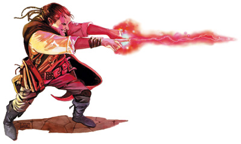

诡术师靠着魔法的力量耍花招，偷鸡摸狗或是恶作剧。他们是所有冒险者中，适应力最强的那一部分人。
由于进阶诡术师必须能够施展奥术和进行偷袭，因此绝大部分进阶者都是兼职的游荡者/法师以及游荡者/术士。刺客也偶尔会选择诡术师的道路，但一般而言，他们也拥有术士或是法师的职业等级。
诡术师在冒险相信自己的直觉，靠魔法的力量增强自己的机动力和潜行能力。而一名NPC诡术师则很有可能会在酒馆里“不小心”跌到玩家身上（因此，小心自己的钱包！）。

生命骰：d4
进阶要求：
想要成为一名诡术师，角色必须满足下述条件：
阵营：非守序阵营
技能：解读文书7级，解除装置7级，逃脱7级，知识（神秘）4级
法术：必须能够施展“法师之手”，以及任意一个3级或更高等级的法术
特殊：必须拥有至少2d6点伤害的偷袭能力
本职技能（以及技能的关键属性）：估价（智力），平衡（敏捷），唬骗（魅力），攀爬（力量），专注（体质），手艺（智力），解读文书（智力），交涉（魅力），解除装置（智力），易容（魅力），逃脱（敏捷），收集情报（魅力），躲藏（敏捷），跳跃（力量），知识（智力），聆听（感知），潜行（敏捷），开锁（敏捷），专业（感知），观言察色（感知），搜索（智力），手技（敏捷），语言（无），法术辨识（智力），侦察（感知），游泳（力量），翻滚（敏捷）以及绳技（敏捷）。技能的详细说明，请参见玩家手册第四章。
每等级技能点数：4+智力调整值
表6-2 诡术师
等级 基本攻击加值 坚韧豁免 反射豁免 意志豁免 特殊 法术
1 +0 +0 +2 +2 远程诡术每日1次 施法者等级+1
2 +1 +0 +3 +3 偷袭+1d6 施法者等级+1
3 +1 +1 +3 +3 强行偷袭每日1次 施法者等级+1
4 +2 +1 +4 +4 偷袭+2d6 施法者等级+1
5 +2 +1 +4 +4 远程诡术每日2次 施法者等级+1
6 +3 +2 +5 +5 偷袭+3d6 施法者等级+1
7 +3 +2 +5 +5 强行偷袭每日2次 施法者等级+1
8 +4 +2 +6 +6 偷袭+4d6 施法者等级+1
9 +4 +3 +6 +6 远程诡术每日3次 施法者等级+1
10 +5 +3 +7 +7 偷袭+5d6 施法者等级+1
职业特性：
擅长武器及防具：诡术师不擅长任何武器或防具。
法术：当诡术师升级时，可以获得新法术，如同角色进阶前的施法者等级同时提升。角色只能提高施法能力，而不能获得先前职业的其他好处（增进驱散或斥喝不死生物能力、超魔或制造物品专长等）。若角色在进阶前拥有多个施法职业，则必须选择要将此升级的诡术师等级加在哪一种施法职业上，以决定新的每日法术数量。
远程诡术：诡术师可以运用独特的技术，在30尺距离内使用以下能力：解除装置，开锁或是手技。使用远程诡术将使技能检定DC得到+5的提升，并且在检定中无法取10。远程诡术的操作对象重量必须在5磅以下。1级时，诡术师可以每日1次使用远程诡术，5级时每日2次，9级时每日3次。要使用远程诡术，诡术师的技能等级必须高于1。
偷袭：本能力于游荡者的同名能力完全相同，额外的偷袭伤害每2等级（2级，4级，6级，8级和10级）得到+1d6点的提升。诡术师自其它职业（如游荡者）获得的偷袭伤害可与诡术师本身的偷袭伤害叠加。
强行偷袭：当诡术师达到3级时，每日1次将自己的攻击强行转变为偷袭（强行远程偷袭时，目标必须位于30尺以内）。目标的防护等级失去敏捷加值，但仅在本次攻击内有效。本能力可以作用于任何目标，但不受重击的生物同时也不承受额外的偷袭伤害（但防护等级仍失去敏捷加值）。当诡术师达到7级时，可以每日2次使用本能力。